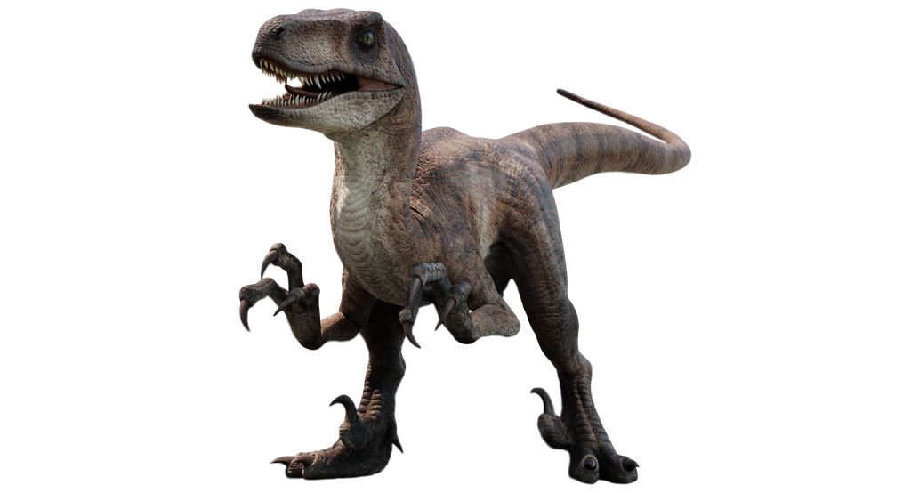

Velociraptor
Período: Cretácico Superior
Altura: 0.5 m
Lonxitude: 1.8 m
Dieta: carnívora
Carnívoro pequeno e áxil que viviu hai aproximadamente 75 millóns de anos. Tiña uns 2 metros de lonxitude e era coñecida pola súa velocidade, intelixencia e as garras curvas nas súas patas. Cazaba en grupo. A variedade do parque é o triple de grande.
